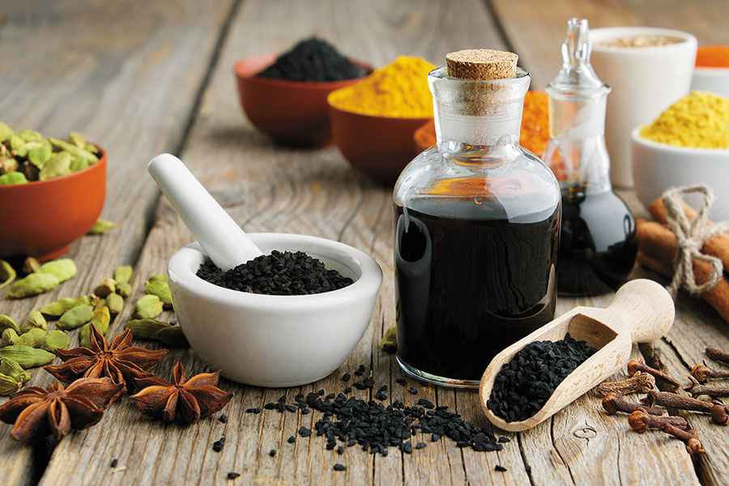

{% extends "layout.html" %}
{% block style %}
<link rel="stylesheet" type="text/css" href="{{url_for('static', filename='style5.css')}}">
{% endblock style%}
{%block content%}
<!-- Action Section -->
<section class="action-section wrapper">
    <div class="action-container">
        <div class="emergency-heading" id="emergency-heading">
        </div>
        <div class="container content-container flex">
            <div class="left flex">
                <div class="content" id="content">
                    <h3>Take the following steps:- </h3>
                    <ul class="main-content" id="main-content">
                    </ul>
                    <div class="primary-button full-guide-btn" id="full-guide-btn">
                        CLICK HERE FOR FULL GUIDE
                    </div>
                </div>
            </div>
            <div class="right">
                <div class="video-tutorial" id="video-tutorial">
                </div>
                <p>Video Tutorials</p>
            </div>
        </div>
    </div>

    <!-- Font Awesome Linking -->
    <script src="https://kit.fontawesome.com/b88994d2e3.js" crossorigin="anonymous"></script>
    <!-- Script Files linking -->
    <script>
        const head = document.querySelector('#emergency-heading');
        // Types of Emergencies
        const arr = ['Choking', 'Heart Attack', 'Allergic Reactions', 'Drowning', 'Diabetic Emergencies', 'Animal Bites and Stings', 'CPR', 'Fractures and Sprains', 'Poisoning', 'Bleeding and Wounds', 'Heatstroke', 'Pregnacy Labour'];

        const emergency = localStorage.getItem("textval");
        console.log(emergency)
        head.innerHTML = `<h2>${emergency}:How to Respond</h2>`;
        var x = -1;
        arr.forEach((ele, index) => {
            if (emergency == ele) {
                x = index;
            }
        });
        localStorage.setItem("alpha", x);
        const content =
            [
                "Bend the person over at the waist to face the ground. Strike five separate times between the person's shoulder blades with the heel of your hand. Give five abdominal thrusts. If back blows don't remove the stuck object, give five abdominal thrusts, also known as the Heimlich maneuver",

                "Drive yourself only if you have no other option. Because your condition can worsen, driving yourself puts you and others at risk. Chew and swallow an aspirin while waiting for emergency help. Aspirin helps keep your blood from clotting",

                "Over-the-counter (OTC) antihistamines and decongestants may relieve minor symptoms of an allergic reaction. Antihistamines prevent symptoms such as hives by blocking histamine receptors so your body doesn't react to the allergens. Decongestants help clear your nose and are especially effective for seasonal allergies",

                "Take a breath and place your lips around the casualty's mouth, forming a seal. Blow into the casualty's mouth until the chest rises. Follow by beginning chest compressions. Kneel by the casualty and put the heel of your hand in the middle of their chest",

                "Give them something sweet to eat or a non-diet drink. If someone has a diabetic emergency, their blood sugar levels can become too low. This can make them collapse. Giving them something sugary will help raise their blood sugar levels and improve their bodily function",

                "To care for a minor animal bite or claw wound, such as one that only breaks the skin, take these steps: Wash the wound thoroughly with soap and water. Apply an antibiotic cream or ointment and cover the bite with a clean bandage",

                "Push hard at a rate of 100 to 120 compressions a minute. If you haven't been trained in CPR , continue chest compressions until there are signs of movement or until emergency medical personnel take over. If you have been trained in CPR , go on to opening the airway and rescue breathing",

                "The affected area should not be moved; Because moving it can lead to severe complications, especially if the fracture is in the neck or spine. The affected area should be cooled by placing ice cubes with a clean cloth and then placed on the affected area in order to reduce swelling and pain",

                "If the person inhaled poison, get him or her fresh air right away. If the person has poison on the skin, take off any clothing the poison touched. Rinse skin with running water for 15 to 20 minutes. If the person has poison in the eyes, rinse eyes with running water for 15 to 20 minutes",

                "Cover the wound with sterile gauze or a clean cloth. Press on it firmly with the palm of your hand until bleeding stops. But don't press on an eye injury or embedded object. Don't press on a head wound if you suspect a skull fracture",

                "Spray the person with a garden hose. Sponge the person with cool water. Fan the person while misting with cool water. Place ice packs or cool wet towels on the neck, armpits and groin",

                "Some of the signs and symptoms of going into labour may include period-like cramps, backache, diarrhoea and contractions. If you are unsure whether to stay home or go to the hospital, ring and speak to one of the midwives. If your waters break or if you start bleeding from the vagina, go immediately to hospital"
            ];
        const text = document.querySelector("#content");
        const mainContent = document.querySelector("#main-content");
        const ele = content[x];
        // text.innerHTML = `<p>${ele}</p>`;
        const newarr = ele.split('.');
        newarr.forEach((element) => {
            const child = document.createElement('li');
            child.innerHTML = `${element}.`;
            mainContent.appendChild(child);
        });
        const iframes = [
            "https://www.youtube.com/embed/6E9AXXRdkfE?si=GjL_GcACJALelpHp",

            "https://www.youtube.com/embed/6ZGg0zJUFEI?si=ZhTPbIbRfEdagHPW",

            "https://www.youtube.com/embed/yqaLKuhMCPw?si=VMEgUwro-abdNJgm",

            "https://www.youtube.com/embed/v1YrU55ACbE?si=Fe6MYxn58-ayU6CN",

            "https://www.youtube.com/embed/L06DNMRcy98?si=PSosx_tPzVim5SJM",

            "https://www.youtube.com/embed/kLpaRGeBKLI?si=MIrDMwsGQ8R-btN-",

            "https://www.youtube.com/embed/BQNNOh8c8ks?si=mR2nNE0N4VSjZrfz",

            "https://www.youtube.com/embed/RuKr2hSRtPo?si=WwqWIIULaG4tl_vU",

            "https://www.youtube.com/embed/b2ieb8BZJuY?si=cU2Q3g46Ka9CsFM9",

            "https://www.youtube.com/embed/NxO5LvgqZe0?si=e7yHcsehNbI4gY-8",

            "https://www.youtube.com/embed/jvGC_dQJUtE?si=Q4v1c5-zhhZFyDJ3",

            "https://www.youtube.com/embed/UersVsbskSg?si=wUXGQ1TeYvHPzyow"
        ];

        const video = document.querySelector('#video-tutorial');
        const frame = iframes[x];
        video.innerHTML = `<iframe width="560" height="315" src="${frame}" title="YouTube video player" frameborder="0" allow="accelerometer; autoplay; clipboard-write; encrypted-media; gyroscope; picture-in-picture; web-share" allowfullscreen></iframe>`;

    </script>
    <script>
        //All herbs data 
        let emergencyArray = [
            'Choking',
            'Heart Attack',
            'Allergic Reactions',
            'Drowning',
            'Diabetic Emergencies',
            'Animal Bites and Strings',
            'CPR',
            'Fractures and Spains',
            'Poisoning',
            'Bleeding and Wounds',
            'Heatstroke',
            'Pregnancy labour'
        ]

        let recognizeEmergency = [

            `Recognizing the signs and symptoms specific to an emergency is the critical first step in providing effective assistance. In the case of choking, it's essential to be alert to signs such as sudden difficulty breathing, an inability to speak or cough, and a distressed or panicked look on the person's face. In a heart attack situation, watch out for symptoms like chest pain or discomfort, shortness of breath, nausea, and lightheadedness. Allergic reactions can manifest with symptoms ranging from hives and itching to swelling of the face and difficulty breathing. For drowning incidents, remain vigilant for individuals who are struggling in the water, gasping for air, or unable to call for help. Properly identifying these signs can significantly impact the outcome of the emergency, as it allows for timely and appropriate response.`,
            `Recognizing the signs of a heart attack is crucial for a timely response. Heart attack symptoms may include intense chest pain or discomfort, often radiating to the left arm, shoulder, or jaw. Other warning signs can encompass shortness of breath, profuse sweating, nausea, and a feeling of impending doom. It's important to note that heart attack symptoms can vary, and some individuals, particularly women, may experience atypical signs such as abdominal discomfort, lightheadedness, or extreme fatigue. Being alert to these symptoms, especially when they occur suddenly and persist, is vital. If you or someone nearby exhibits these indications, it's imperative to consider the possibility of a heart attack and seek immediate medical assistance by calling 911 or your local emergency services.`,

            `Recognizing the signs of an allergic reaction is essential for a swift response. Allergic reactions can vary in severity, from mild to life-threatening. Common symptoms include hives, itching, swelling of the face, lips, or tongue, and nasal congestion. In severe cases, anaphylaxis may occur, which presents with symptoms like difficulty breathing, a sudden drop in blood pressure, rapid pulse, and confusion. It's crucial to be aware of allergens that can trigger such reactions, including certain foods, insect stings, medications, or latex. If someone exhibits these symptoms, especially if they involve breathing difficulties or a rapidly worsening condition, consider the possibility of an allergic reaction and seek immediate medical assistance by calling 911 or your local emergency services.`,
            `
    Recognizing a drowning emergency is of paramount importance to ensure a rapid and effective response. Drowning incidents can happen suddenly and often without the loud cries for help portrayed in movies. Instead, be vigilant for subtle signs that may indicate someone is in distress in the water. Look for individuals struggling to stay afloat, their movements becoming erratic or uncoordinated, and an expression of panic or fear on their face. Drowning victims might try to push themselves up in the water, extending their arms sideways or clawing at the water's surface.
    
    It's worth noting that drowning can also manifest as a silent event, where the person doesn't make any noise or visible commotion. They may simply bob at the surface, appearing calm, which is why constant supervision is crucial, especially for children.
    
    Children, in particular, are at a higher risk of drowning. They can submerge in seconds, even in shallow water, without warning. Keep a watchful eye on them whenever they are near water, whether it's a pool, lake, or bathtub.
    
    While recognizing drowning is essential, it's equally vital to take immediate action. The sooner you respond, the higher the chances of a positive outcome. Even if you're unsure if someone is in distress, it's better to be cautious and investigate rather than assume everything is fine. Quick, decisive, and accurate recognition is the first step in saving lives in drowning emergencies.`,
            `Recognizing a diabetic emergency is essential for a timely and appropriate response. Diabetic emergencies primarily occur in two forms: hypoglycemia (low blood sugar) and hyperglycemia (high blood sugar). In cases of hypoglycemia, watch for symptoms like shakiness, sweating, confusion, irritability, and rapid heartbeat. The person may also become pale and exhibit unusual behavior. For hyperglycemia, symptoms often include excessive thirst, frequent urination, fatigue, fruity breath odor, and confusion. It's critical to be aware of these signs, especially if the person has diabetes or a history of blood sugar issues. Recognizing these symptoms promptly can help you differentiate between low and high blood sugar levels and provide the appropriate assistance.`,
            `Recognizing an animal bite or sting is a vital step in ensuring a timely and effective response. These incidents can range from minor inconveniences to severe emergencies, and being able to distinguish the nature of the situation is crucial. In the case of an animal bite, carefully examine the affected area for any open wounds, puncture marks, or abrasions. Pay close attention to pain, bleeding, and potential signs of infection, including redness, swelling, or discharge. It's equally important to identify the type of animal responsible for the bite, as this knowledge can influence the necessary medical actions. For instance, bites from domestic pets like dogs or cats may require different considerations compared to bites from wildlife or stray animals, which could carry additional risks due to potential disease transmission.

    When it comes to stings, such as those from bees, wasps, hornets, or even scorpions, watch out for a visible stinger left in the skin. Stings are often characterized by localized pain, redness, swelling, and sometimes allergic reactions. In cases of multiple stings, the cumulative effect can lead to more severe symptoms, making quick recognition even more critical.`,
            `Recognizing the need for CPR is a pivotal moment in a life-saving chain of events. It's crucial to be alert and observant, especially in situations where someone has suddenly collapsed and is unresponsive. The primary indicator that CPR may be necessary is if the person is not breathing or is breathing abnormally, often characterized by gasping or agonal breaths, which are irregular, labored, and insufficient for sustaining life. In such cases, it's essential to check for responsiveness by tapping the person and shouting loudly to elicit a response. If there's no response and normal breathing is absent or inadequate, it's time to initiate CPR.
    `,
            `Recognizing fractures and sprains is essential for an effective response to these injuries. Fractures involve broken bones and are often characterized by visible deformities, intense pain, and sometimes an audible crack at the time of injury. The injured area may also swell and bruise. On the other hand, sprains involve damage to ligaments, which connect bones to each other. Signs of a sprain include pain, swelling, bruising, and limited joint movement. Both fractures and sprains can be painful and may result from accidents, falls, or overexertion during physical activities. Identifying the difference between the two and assessing the severity of the injury is crucial to providing the right care.`,
            `Recognizing a poisoning emergency is critical for immediate and appropriate response. Poisoning can occur through various means, such as ingesting toxic substances, inhaling harmful fumes or gases, or absorbing toxins through the skin. Signs and symptoms of poisoning can vary widely depending on the type of poison involved but may include nausea, vomiting, diarrhea, abdominal pain, dizziness, difficulty breathing, confusion, seizures, or loss of consciousness. Additionally, the person may exhibit unusual behavior or present with physical evidence of exposure, such as empty pill bottles, chemical containers, or burns on the skin. It's essential to be vigilant, especially in situations where poisoning is suspected, such as accidental ingestion by children or exposure to hazardous chemicals.`,
            `Recognizing a bleeding wound is crucial for immediate and effective response. Wounds can range from minor cuts and scrapes to deep gashes and punctures, and the severity of bleeding can vary accordingly. Signs of a bleeding wound include blood flowing from the injured area, a steady oozing of blood, or soaked clothing or bandages. Sometimes, the person may experience pain, swelling, or redness around the wound. It's essential to assess the situation and determine whether the bleeding is minor and can be managed with basic first aid or if it's severe and requires immediate medical attention.`,
            `Recognizing a heatstroke emergency is critical for immediate and appropriate response. Heatstroke occurs when the body's core temperature rises to a dangerously high level due to prolonged exposure to high temperatures and inadequate cooling. Symptoms of heatstroke include a high body temperature (usually above 104°F or 40°C), hot and dry skin (although it may be moist in some cases), rapid pulse, confusion, dizziness, nausea, and even loss of consciousness. Heatstroke is a life-threatening condition that can lead to organ damage and death if not treated promptly. It's essential to be vigilant, especially during hot weather or strenuous physical activity, and be aware of these signs, both in oneself and others.`,
            `Recognizing the signs of labor is essential for expectant mothers to know when it's time to seek medical attention or head to the hospital. The onset of labor typically involves several signs, including regular contractions that become progressively stronger and closer together. Contractions feel like intense menstrual cramps and usually start in the lower back and move towards the front of the abdomen. Another sign is the release of the amniotic fluid, commonly referred to as the "water breaking." This can happen as a sudden gush or a slow trickle of fluid. Additionally, as labor progresses, the cervix begins to dilate and efface, which can be checked during prenatal visits or by a healthcare provider during labor. Other signs include a bloody or mucus-like discharge called the "bloody show" and the descent of the baby's head into the pelvis, causing increased pressure on the bladder.`

        ]

        let immediateResponse = [
            `Taking immediate action when confronted with an emergency is paramount. The first step in any emergency is to call 911 or your local emergency services immediately, providing them with precise and clear information about the situation. Ensuring your safety and that of others in the vicinity is equally crucial. In a choking emergency, encourage the person to cough forcefully, as this may help clear the obstruction. If this doesn't work, perform the Heimlich maneuver promptly. When dealing with a heart attack, assist the individual in sitting down and chewing an aspirin if available while awaiting medical assistance. In the event of a drowning situation, avoid entering the water if it's unsafe and instead use an extended object or throw a buoyant object to reach the person. Quick and decisive actions in the initial moments of an emergency can make a significant difference in the outcome.`,
            `Upon recognizing a potential heart attack, immediate action is essential. First, call 911 or your local emergency number to request professional medical help. Provide a clear and concise description of the situation and the symptoms being observed. While waiting for the ambulance, assist the affected individual in sitting down in a comfortable position, which can alleviate strain on the heart and facilitate breathing. If the person is not allergic to aspirin and it's available, encourage them to chew and swallow an aspirin (usually 325 mg). Aspirin can help reduce blood clot formation, improving blood flow to the heart. Continuously monitor the person's condition, staying prepared to perform CPR (Cardiopulmonary Resuscitation) if they become unresponsive and show no signs of normal breathing or only gasping. The swift initiation of these steps can be life-saving.`,
            `Upon recognizing a potential allergic reaction, immediate action is critical. First, call 911 or your local emergency number to request professional medical help. Provide a clear and concise description of the situation and the symptoms being observed. While waiting for medical assistance, help the affected individual to sit up, if possible, and remain as calm as you can. If they have been prescribed an epinephrine auto-injector (e.g., EpiPen), assist them in using it following the provided instructions. Epinephrine can help reverse the symptoms of anaphylaxis temporarily. Continue to monitor the person's condition and be prepared to perform CPR (Cardiopulmonary Resuscitation) if they become unresponsive and show no signs of normal breathing or only gasping. Quick and appropriate actions can be life-saving.`,
            `Upon recognizing a drowning emergency, swift and effective action is vital. Start by ensuring your safety – do not enter the water if it's unsafe, as this can put you at risk as well. Instead, use an extended object, like a long pole, tree branch, or clothing tied together, to reach the person in distress. If possible, throw a buoyant object such as a lifebuoy, life jacket, or any floating item to them to provide support. Keep your presence reassuring and let the person know you are there to help. In cases where the individual is still conscious, approach from behind to avoid potential panic and pull them towards safety using the extended object. Once on land or in a stable position, assess their condition and ensure they are breathing and have a pulse.`,
            `Upon recognizing a diabetic emergency, quick and appropriate action is essential. If the person is experiencing hypoglycemia (low blood sugar), their blood sugar levels need to be raised promptly. Offer them a source of fast-acting carbohydrates such as fruit juice, glucose gel, or candy. Encourage them to eat or drink if they are conscious and able to swallow safely.

    For hyperglycemia (high blood sugar), they may require insulin or other medications, which should be administered following their prescribed treatment plan. Encourage them to drink water to help flush excess sugar from their system and contact their healthcare provider if their condition worsens.
    
    In both cases, if the person becomes unconscious or their condition does not improve quickly, call 911 or your local emergency services immediately. Do not try to force-feed an unconscious person.`,
            `Upon recognizing an animal bite or sting, immediate action is crucial. For bites, start by cleaning the wound gently with soap and water to reduce the risk of infection. Apply an antiseptic if available and cover the wound with a clean bandage. If the bite is from a wild or stray animal or if it's a deep or severe bite, seek immediate medical attention, as a tetanus shot or antibiotics may be necessary.

    For stings, if the stinger is visible, carefully remove it using a scraping motion with a flat object like a credit card. Wash the area with soap and water and apply a cold compress to reduce swelling. Over-the-counter pain relievers and antihistamines can help alleviate discomfort and allergic reactions.
    
    If the individual experiences severe symptoms like difficulty breathing, swelling of the face or throat, or signs of anaphylaxis (a severe allergic reaction), call 911 or your local emergency services immediately.`,
            `Upon recognizing the need for CPR, swift and accurate action is paramount. First, call 911 or your local emergency services to request professional medical help. Clearly describe the situation and the unresponsiveness of the person. If someone else is present, instruct them to make the call while you start CPR. If you are alone, make the call yourself if a speakerphone or hands-free option is available.

    Next, position the person on their back on a firm, flat surface. Ensure the area around them is safe for both you and the victim, free from hazards like water, fire, or traffic. To check for signs of life, place your ear near their mouth and nose while looking at their chest to see if it rises and falls. If the person is not breathing or only gasping, it's time to initiate CPR immediately.
    
    For adults and adolescents, begin with chest compressions. For infants and young children, start with rescue breaths. The goal is to maintain circulation and oxygenation. Push hard and fast in the center of the chest, aiming for a rate of 100-120 compressions per minute. After every 30 compressions (or after five cycles of compressions and breaths in infants), give two rescue breaths if applicable. Continue CPR until professional help arrives, the person starts breathing on their own, or you are too exhausted to continue. Remember that any attempt at CPR, even by an untrained bystander, can significantly improve a person's chances of survival.`,
            `Upon recognizing a fracture or sprain, immediate action is essential to minimize further damage and alleviate pain. Start by ensuring the safety of the injured person and the surrounding environment. In the case of a fracture, immobilize the injured area to prevent any unnecessary movement that could exacerbate the injury. Use a splint or any available materials like boards, rolled-up newspapers, or clothing to support and stabilize the fractured bone. For sprains, apply the RICE method, which stands for Rest, Ice, Compression, and Elevation. Have the person rest the injured limb, apply ice (wrapped in a cloth) to reduce swelling, use a compression bandage to support the area, and elevate the limb above the heart to minimize swelling.

    For both fractures and sprains, seek professional medical attention promptly. A doctor can assess the injury's severity, provide necessary treatments, and may recommend imaging like X-rays to diagnose fractures accurately.`,
            `Upon recognizing a poisoning emergency, quick and accurate action is paramount. Start by ensuring the safety of the affected person and those nearby. If the person is unconscious or having difficulty breathing, call 911 or your local emergency services immediately. Do not wait for symptoms to worsen. Provide them with fresh air if the poisoning resulted from inhaling toxic fumes or gases.

    If the person is conscious and alert, gather information about the type of poison involved and contact a poison control center or a healthcare provider for guidance on how to respond. Follow their instructions carefully. If the poison was ingested, do not induce vomiting unless directed to do so by a medical professional or poison control. Inducing vomiting can sometimes worsen the situation.
    
    In cases where the poison has come into contact with the skin, remove contaminated clothing and rinse the affected area with copious amounts of water for at least 15 minutes. If the eyes are affected, flush them with water for a similar duration.
    
    For chemical or substance poisonings, try to identify the substance or gather any available containers or labels for reference.`,
            `Upon recognizing a bleeding wound, quick and appropriate action is vital to control bleeding and prevent infection. Start by ensuring your safety and that of the injured person. If the bleeding is severe and arterial (bright red and spurting), call 911 or your local emergency services immediately, as it can be life-threatening.

    For minor bleeding, apply direct pressure to the wound using a clean cloth, gauze pad, or your hand if nothing else is available. Maintain pressure for several minutes until bleeding stops. Elevate the injured area if possible to further reduce bleeding. If the bleeding persists, consider using a tourniquet as a last resort and only if you have received proper training.
    
    For wounds with foreign objects embedded, do not remove the object as it may worsen bleeding or cause additional damage. Instead, apply pressure around the object to control bleeding.`,
            `Upon recognizing a heatstroke emergency, quick and accurate action is vital to prevent further harm. If you suspect someone is experiencing heatstroke, call 911 or your local emergency services immediately. While waiting for professional help to arrive, move the person to a cooler, shaded area if possible. If you're outdoors, bring them indoors.

    To lower the person's body temperature, initiate cooling measures. You can do this by applying cool water to their skin using a sponge or cloth and/or by having them take a cool bath or shower. Use fans or air conditioning to help with cooling. If it's not possible to immerse them in water, wet their clothing and fan the person vigorously. Encourage them to drink cool water if they are conscious and able to swallow safely.
    
    Do not use ice water for cooling, as it can constrict blood vessels and hinder heat dissipation. Also, avoid excessive physical activity, as it can increase body heat.`,
            `Upon recognizing the signs of labor, it's important to remain calm and follow a few key steps. First, contact your healthcare provider or the hospital to inform them of your situation. Describe your contractions and any other symptoms you're experiencing. They will provide guidance on when to come in for evaluation and how to manage contractions in the meantime.

    During early labor, it's often recommended to stay at home as long as possible, rest, and hydrate. Take warm showers or baths to ease discomfort, use relaxation techniques, and change positions to find comfort. Breathing exercises can also help manage contractions. Have your bags packed with essentials for the hospital or birthing center.
    
    If your water has broken and it's clear and odorless, it's usually safe to wait at home. However, if it's greenish or foul-smelling, or if you have concerns about infection, contact your healthcare provider immediately.`
        ]

        let firstAidProcedure = [
            `Knowing the appropriate first aid procedures for specific emergencies is crucial. In the case of choking, you should stand behind the person and make a fist with one hand, placing it just above their navel. Perform abdominal thrusts to dislodge the obstructing object. It's essential to perform these thrusts effectively and carefully to avoid causing harm. For a heart attack, if the person becomes unresponsive with no normal breathing or only gasping, initiate chest compressions immediately. The recommended ratio is 30 chest compressions to 2 rescue breaths. These techniques can help maintain vital blood flow and oxygenation during a cardiac emergency, potentially saving a life. Proper training and practice are crucial for mastering these techniques, as they can be life-saving skills in critical situations.`,
            `When faced with a heart attack, immediate and correct action is paramount. After dialing 911 or your local emergency services, follow these essential first aid procedures: Ensure that the affected person is in a comfortable and safe position, ideally sitting down if conscious. Next, call for professional medical help, providing clear details of the situation and the observed symptoms. If aspirin is available and the person is not allergic to it, encourage them to chew and swallow an aspirin (usually 325 mg) to help reduce blood clot formation and improve blood flow to the heart. Continuously monitor the person's condition, staying prepared to initiate CPR (Cardiopulmonary Resuscitation) if they become unresponsive and show no signs of normal breathing or only gasping. If an automated external defibrillator (AED) is nearby and accessible, follow its instructions for use as it can analyze the heart's rhythm and deliver electrical shocks if necessary. Proper training in CPR and AED usage is essential to effectively carry out these life-saving procedures.`,
            `When dealing with an allergic reaction, quick and appropriate actions can be life-saving. Start by ensuring that you have already called 911 or your local emergency services for immediate medical assistance. After that, assist the affected individual in sitting up, if possible, and remaining as calm as you can. If they have been prescribed an epinephrine auto-injector (e.g., EpiPen) and it's available, help them use it following the provided instructions. Epinephrine can temporarily alleviate the severe symptoms of anaphylaxis. Continuously monitor the person's condition, paying attention to their breathing, pulse, and level of consciousness. In the event that they become unresponsive and show no signs of normal breathing or only gasping, be prepared to initiate CPR (Cardiopulmonary Resuscitation). Proper training in CPR and the use of an epinephrine auto-injector is crucial to effectively carry out these first aid procedures and improve the individual's chances of survival during an allergic reaction emergency.`,
            `When dealing with a drowning emergency, it's essential to act quickly and correctly. Start by ensuring your own safety and that of others around you. Do not enter the water if it's dangerous, as this could lead to further accidents. Instead, use an extended object like a pole, branch, or a thrown buoyant object to reach the person in distress. If the person is still conscious and within reach, approach from behind to avoid potential panic, and assist them in reaching safety. Once on stable ground, assess their condition and provide reassurance. If the person is unresponsive and not breathing, initiate CPR (Cardiopulmonary Resuscitation) immediately, starting with rescue breaths and chest compressions. Continue these life-saving procedures until professional medical help arrives or the person starts breathing on their own. Proper training in water rescue techniques and CPR is crucial for effectively responding to drowning emergencies.`,
            `When dealing with a diabetic emergency, the first aid procedures differ depending on whether it's hypoglycemia or hyperglycemia. For hypoglycemia, offering fast-acting carbohydrates is crucial. Provide the person with fruit juice, glucose gel, candy, or other sources of sugar. If they are conscious and able to swallow safely, encourage them to consume these items. For hyperglycemia, follow the individual's prescribed treatment plan, which may involve insulin administration or other medications. Ensure they drink water to help reduce high blood sugar levels. Always respect their preferences and any specific instructions provided by their healthcare provider`,
            `When dealing with animal bites and stings, proper first aid procedures can make a significant difference. After cleaning the bite wound, apply an antibiotic ointment and cover it with a sterile dressing. Encourage the individual to keep the wound clean and monitor it for signs of infection, such as increased redness, swelling, or pus.

    For stings, continue to apply a cold compress to alleviate pain and reduce swelling. Over-the-counter pain relievers and antihistamines can provide relief from discomfort and allergic reactions.
    
    In cases of severe bites or stings that result in significant swelling, difficulty breathing, or signs of anaphylaxis, it's essential to seek immediate medical attention. Administering an epinephrine auto-injector may be necessary for allergic reactions.`,
            `Performing CPR involves a sequence of actions designed to circulate oxygen-rich blood to vital organs and tissues when a person's heart has stopped. To begin, place the heel of one hand on the center of the person's chest, just below the nipple line. Place your other hand on top, interlocking your fingers, and position yourself with your shoulders directly above your hands. Keep your arms straight, and use your upper body weight to compress the chest at least 2 inches (5 centimeters) deep for adults and adolescents.

    Maintain a steady rhythm, compressing the chest at a rate of 100-120 compressions per minute. Allow the chest to fully recoil between compressions to ensure effective blood circulation. If you are trained and comfortable with rescue breaths, provide them after every 30 compressions. Tilt the person's head back slightly, pinch their nose shut, and cover their mouth with yours to create an airtight seal. Deliver two rescue breaths, each lasting about one second, with enough volume to see the chest rise.
    
    For infants and young children, the process is similar, but use two fingers for chest compressions instead of your full hand.
    
    Continue CPR until one of the following occurs: professional medical help arrives, the person starts breathing on their own, an automated external defibrillator (AED) becomes available (in which case, follow the AED's prompts), or you are too exhausted to continue. Remember that even as an untrained bystander, initiating CPR can greatly increase the chances of survival for the person in need.`,
            `When providing first aid for fractures and sprains, remember to prioritize the person's comfort and safety. For fractures, gently immobilize the injured area using a splint or other available materials. Ensure that the splint is long enough to immobilize the joints above and below the fracture. This helps prevent further injury and reduces pain.

    For sprains, follow the RICE method. Allow the person to rest and avoid putting weight on the injured limb. Apply ice to the area for 15-20 minutes every 1-2 hours during the initial 48 hours to reduce swelling. Use a compression bandage to support the injured area but ensure it's not too tight, as this can impede blood flow. Elevate the sprained limb above heart level whenever possible.
    
    Pain relief can be provided with over-the-counter pain medications, but always follow recommended dosages and consult a healthcare professional if there are concerns about the injury's severity.`,
            `When dealing with a poisoning emergency, first aid procedures can vary depending on the type of poison and the specific situation. It's crucial to follow the guidance provided by poison control or medical professionals. In cases of ingestion, if advised by a healthcare provider or poison control, you may be instructed to administer activated charcoal to help absorb the poison or to dilute the poison by encouraging the person to drink water or milk.

    For poison on the skin, thorough rinsing with water can help remove the contaminant. Be sure to wear appropriate personal protective equipment, such as gloves, if you're assisting the poisoned person.
    
    If the person is experiencing severe symptoms like difficulty breathing, seizures, or loss of consciousness, be prepared to perform CPR (Cardiopulmonary Resuscitation) if necessary.
    
    In all cases, maintain close monitoring of the person's condition and provide reassurance to keep them as calm as possible.`,
            `When providing first aid for bleeding wounds, focus on controlling bleeding and preventing infection. After applying direct pressure and elevating the injured area if needed, cover the wound with a sterile dressing or a clean cloth. Secure the dressing with a bandage or tape, being careful not to disrupt the clot that may have formed. Encourage the injured person to keep the wound elevated and to avoid unnecessary movement to minimize the risk of further bleeding.

    For wounds with embedded objects, secure the dressing around the object to keep it in place.
    
    If bleeding continues despite initial measures, do not remove the dressing; instead, apply additional layers.
    
    Once bleeding is under control, continue to monitor the person's condition and be prepared to perform CPR if they become unresponsive and show no signs of normal breathing or only gasping.`,
            `When providing first aid for heatstroke, the primary goal is to lower the person's body temperature as quickly as possible. Continue to cool the person using the methods mentioned earlier, such as applying cool water to their skin or immersing them in a cool bath if possible. Focus on areas with high blood flow, like the neck, wrists, and groin.

    Monitor the person's vital signs, including their temperature, pulse, and breathing. If they become unconscious but are breathing, place them in the recovery position to keep the airway clear. Continue cooling efforts until professional medical help arrives, as it may take some time to fully stabilize the person's condition.
    
    Do not give the person any medications, such as aspirin or ibuprofen, unless directed by a healthcare professional.`,
            `During early labor, before heading to the hospital or birthing center, focus on self-care and comfort measures. Rest, stay hydrated, and take slow, deep breaths during contractions. Consider practicing relaxation techniques, such as guided imagery or progressive muscle relaxation. Change positions to find the most comfortable one – this might involve walking, swaying, or sitting on a birthing ball.

    When contractions become stronger and more regular, practice controlled breathing techniques, like slow, deep breaths, or the "hee-hee-hoo" pattern. Have your support person, whether a partner or a doula, assist you with comfort measures like massage and counter-pressure on your lower back. Remember to stay as relaxed as possible, as tension can intensify the pain.
    
    Monitor the frequency, duration, and intensity of contractions, and contact your healthcare provider as they instruct you to come to the hospital or birthing center.`
        ]

        let prevention = [
            `Following the initial response and first aid procedures, it's essential to continue monitoring the person's condition until professional help arrives. Provide reassurance and support to the individual, keeping them as calm as possible. In the case of allergic reactions, help the person administer an epinephrine auto-injector if it has been prescribed. Beyond immediate response, emphasis should be placed on prevention. Encourage individuals to take proactive measures, such as learning CPR and taking first aid courses, to be better prepared for emergencies. Preparedness also involves having readily accessible emergency kits and knowing how to use them effectively. These measures can significantly contribute to effective response and recovery, potentially reducing the severity of an emergency's impact.`,
            `After the initial response and first aid measures, it's essential to maintain vigilance and consider prevention strategies. Continue to monitor the person's condition until professional help arrives, providing reassurance and support to keep them as calm as possible. Emphasize the importance of seeking prompt medical attention and adhering to prescribed treatments in the post-heart attack phase. For long-term prevention, encourage lifestyle changes such as adopting a heart-healthy diet, engaging in regular exercise, quitting smoking, and managing stress. Regular medical check-ups can help identify and address risk factors early. Moreover, being prepared with knowledge of first aid procedures, including CPR and the use of an AED, can be a valuable skill for individuals and communities to enhance preparedness and reduce the impact of heart-related emergencies.`,
            `After the initial response and first aid measures, it's crucial to consider follow-up and prevention strategies. Continue to monitor the person's condition until professional help arrives, providing reassurance and support to keep them as calm as possible. Emphasize the importance of seeking further medical evaluation and treatment even if symptoms appear to have subsided, as anaphylactic reactions can recur.

    Long-term prevention is key in managing allergies. Encourage individuals with known allergies to avoid allergens that trigger their reactions and carry prescribed medications, such as epinephrine auto-injectors, as recommended by their healthcare provider. Additionally, promote awareness of allergies in the community and educate individuals on recognizing and responding to allergic reactions. Preparedness, including knowing first aid procedures for allergic reactions, can make a significant difference in reducing the severity of these emergencies.`,
            `After the initial response and first aid measures, it's important to consider follow-up and prevention strategies. Continue to monitor the person's condition until professional help arrives, providing reassurance and support to keep them as calm as possible. Seek immediate medical attention even if the person appears to have recovered, as secondary complications can arise from near-drowning incidents. In the broader context of prevention, it's vital to promote water safety measures, including learning how to swim, never leaving children unsupervised near water, and using proper personal flotation devices when boating or swimming. Encourage community awareness of water safety and the importance of learning essential life-saving skills, such as CPR and basic water rescue techniques, to enhance preparedness and reduce the risk of drowning accidents.`,
            `After addressing the immediate situation, it's important to consider follow-up and prevention. For diabetic individuals, consistent monitoring of blood sugar levels and adherence to prescribed treatment plans are key. Encourage them to regularly check their blood sugar, maintain a balanced diet, engage in regular physical activity, and take medications as directed.

    In terms of prevention, education plays a critical role. Promote awareness about diabetes, its symptoms, and the importance of early intervention. Encourage diabetic individuals and their caregivers to carry necessary supplies like glucose meters, insulin, and fast-acting carbohydrates. Also, advise them to wear medical alert bracelets or necklaces to alert others about their condition in case of an emergency. Being well-prepared and educated can help prevent diabetic emergencies and contribute to better management of the condition.`,
            `After providing initial first aid, following up and taking preventive measures are essential. Ensure the individual continues to monitor the bite or sting site for any signs of infection or worsening symptoms. If there are concerns, advise them to consult a healthcare provider promptly.

    Prevention involves being cautious around animals, particularly unfamiliar or wild ones. Avoid provoking or startling animals, and never approach or attempt to pet a strange animal without permission from its owner. Ensure pets are up to date on vaccinations and are well-behaved around people.
    
    For stings, wearing protective clothing such as long sleeves and pants, and using insect repellent can reduce the risk of insect encounters. Additionally, learning about common stinging insects in your area and their habitats can help you avoid potential encounters.
    
    Promote awareness of animal bite and sting prevention measures within your community to help reduce the incidence of these incidents.`,
            `After performing CPR and as professional help takes over, it's essential to continue supporting the person and facilitating their care. Communicate all relevant information to the medical professionals, such as when you began CPR, the number of compressions and breaths administered, and any changes in the person's condition.

    Post-CPR care often involves advanced medical interventions to address the underlying cause of cardiac arrest. Encourage the person's family and loved ones to remain calm and stay informed about their condition, and be prepared to offer emotional support.
    
    Prevention is key when it comes to cardiac arrest and the need for CPR. Promote a heart-healthy lifestyle in your community, emphasizing regular exercise, a balanced diet, and avoidance of smoking and excessive alcohol consumption. Encourage people to learn CPR through certified training programs to enhance overall preparedness and reduce the time to initiation of CPR in emergencies. Automated external defibrillators (AEDs) should also be more readily available in public places, and people should know how to use them.`,
            `After administering first aid for fractures and sprains, follow-up care and prevention are essential. Encourage the injured person to seek professional medical evaluation and treatment to ensure proper healing and to rule out any complications like fractures that might not be immediately visible. In some cases, immobilization with a cast or surgery may be necessary.

    Prevention plays a vital role in reducing the risk of fractures and sprains. Promote safety measures in sports and physical activities, such as wearing appropriate protective gear and practicing proper techniques. Encourage regular exercise and strength training to improve bone and muscle health, which can reduce the risk of injuries. In the workplace, emphasize ergonomic practices and the use of safety equipment to minimize injury risk. In daily life, maintain a clutter-free environment to prevent tripping hazards, and be cautious in slippery or uneven terrain.`,
            `After addressing the immediate poisoning emergency, follow-up care is essential. Seek professional medical evaluation and treatment to ensure the person's well-being and to assess any potential long-term effects or complications from the poisoning.

    Prevention is a key component in reducing the risk of poisoning incidents. Promote safe storage of medications, cleaning products, chemicals, and toxic substances out of reach of children and in their original containers. Use childproof locks when necessary. Educate individuals on the potential hazards of household items and the importance of following safety instructions and labels. Encourage proper disposal of expired medications and hazardous materials at designated collection sites. In workplaces, adhere to safety protocols and provide appropriate training on handling and storage of hazardous materials.`,
            `After addressing the immediate bleeding and wound care, follow-up and prevention are essential considerations. Encourage the injured person to seek professional medical evaluation, especially for wounds that are deep, caused by dirty or rusty objects, or show signs of infection like redness, swelling, or pus. Proper medical care can help prevent complications and ensure proper wound healing.

    Prevention plays a vital role in reducing the risk of bleeding and wound incidents. Promote safe practices in workplaces and at home to prevent accidents that can lead to injuries. Ensure that individuals have access to first aid kits and know how to use them. Emphasize proper hand hygiene to minimize the risk of infection, and encourage the use of personal protective equipment in hazardous environments.
    
    Community awareness and education about bleeding control and wound care can contribute to overall safety and preparedness, reducing the impact of injuries and ensuring prompt and effective response when needed.`,
            `After addressing the immediate heatstroke emergency, follow-up care is essential to assess the person's condition and ensure they are recovering well. Seek professional medical evaluation even if the person appears to have recovered, as complications can arise after a heatstroke incident. Medical professionals can perform tests to check for potential organ damage or other issues.

    Prevention plays a crucial role in avoiding heatstroke. Encourage people to stay hydrated by drinking plenty of water, especially in hot weather or during physical activity. Promote the use of lightweight and loose-fitting clothing in high-temperature environments. Teach individuals to recognize the early signs of heat-related illnesses and the importance of seeking shade and rest when feeling overheated.
    
    In workplaces, implement heat safety protocols, provide frequent breaks, and ensure access to shaded areas and water. Public awareness campaigns and educational efforts can help spread knowledge about heatstroke prevention, particularly in vulnerable populations like the elderly and young children.`,
            `After recognizing the signs of labor, it's crucial to follow the guidance of your healthcare provider and the medical team. Once at the hospital or birthing center, your progress will be monitored closely. Expectant mothers will be assessed for cervical dilation and effacement, as well as the frequency and strength of contractions.

    Labor progresses through several stages, including early labor, active labor, and the transition phase, leading to the second stage of pushing and the third stage of delivering the placenta. During each stage, healthcare professionals will provide guidance, pain management options, and support.
    
    It's essential to maintain open communication with your healthcare provider and advocate for your preferences and concerns. Trust your birthing team, stay as relaxed as possible, and remember that labor is a natural process. After delivery, focus on postpartum care and bonding with your newborn, with guidance and support from healthcare professionals and your support network.`
        ]


        //main code starts here
        var p = localStorage.getItem("alpha");
        let em = p;


        function generateHTML(emergencyName, step1, step2, step3, step4) {
            let webHTML =

                `<div class="head ">
            <div class="blur-image-d">
                <h1 class="main-heading">${emergencyName}</h1>
            </div>
        </div>
        <div class="grid-layout">
            <main>
                <section class="sections" id="history">
                    <div class="box-container">
                        <h2  class="sub-heading">
                        Recognize the Emergency
                        </h2>
                        <div class="para">
                          ${step1}
                        </div>
                    </div>
    
                </section>
    
    
    
                <section class="sections" id="properties">
                    <div class="box-container">
                        <h2 class="sub-heading">
                        Immediate Response 
                        </h2>
                        <div class="para">
                            ${step2}
                        </div>
                    </div>
    
                </section>
    
    
                <section class="sections" id="doshas">
                    <div class="box-container">
                        <h2 class="sub-heading">
                        First Aid Procedures
                        </h2>
                        <div class="para">
                            ${step3}
                        </div>
                    </div>
    
                </section>
    
    
    
                <section class="sections" id="uses">
                    <div class="box-container">
                        <h2 class="sub-heading">
                        Follow-up and Prevention
                        </h2>
                        <div class="para">
                                ${step4}
                        </div>
                    </div>
    
                </section>
    
    
            </main>
            <aside >
                <h2 class="aside-sub-heading">
                    DO YOU KNOW?
                </h2>
                <div class="facts-box">
                    <div class="facts">
                        
                        <div class="fact-text">
                            <div>
                            <i class="fa-solid fa-quote-left quote"></i>
                          Ayurveda, the ancient healing system, predates even the pyramids of Egypt, with a history spanning over 5,000 remarkable years.
                       <i class="fa-solid fa-quote-right quote"></i>
                    </div>
                </div>
            </div>
            <div class="facts">
                
                <div class="fact-text">
                    <div>
                           <i class="fa-solid fa-quote-left quote"></i>
                        Ayurveda's doshas (Vata, Pitta, Kapha) are like unique blueprints for individuals, each holding the secret to their distinctive well-being.
                        <i class="fa-solid fa-quote-right quote"></i>
                    </div>
                </div>
            </div>
            <div class="facts">
                
                <div class="fact-text">
                    <div>
                            <i class="fa-solid fa-quote-left quote"></i>
                            Ayurveda emphasizes the importance of balance in diet and lifestyle to achieve optimal health and wellness.
                            <i class="fa-solid fa-quote-right quote"></i>
                        </div>
                    </div>
              </div>
              <div class="facts">
                    
                    <div class="fact-text">
                       <div>
                           <i class="fa-solid fa-quote-left quote"></i>
                        The six tastes (sweet, sour, salty, bitter, pungent, and astringent) play a crucial role in Ayurvedic nutrition and are believed to influence bodily functions.
                        <i class="fa-solid fa-quote-right quote"></i>
                       </div>
                    </div>
              </div>
              <div class="facts">
                    
                    <div class="fact-text">
                        <div>
                            <i class="fa-solid fa-quote-left quote"></i>
                            Abhyanga, the practice of self-massage with herbal oils, is a key element of Ayurvedic self-care.
                            <i class="fa-solid fa-quote-right quote"></i>   
                        </div>
                    </div>
              </div>
              
              
            </div>
            </aside>
        </div>
    `

            return webHTML
        }
        const fullGuideBtn = document.querySelector('#full-guide-btn');
        fullGuideBtn.addEventListener('click', () => {
            let emergencyName = emergencyArray[p]
            let step1 = recognizeEmergency[p]
            let step2 = immediateResponse[p]
            let step3 = firstAidProcedure[p]
            let step4 = prevention[p]
            let pageHTML = generateHTML(emergencyName, step1, step2, step3, step4)
            localStorage.setItem("firstaid", pageHTML)
            window.location.href = "{{ url_for('fulldetail') }}"

        })
    </script>
    {%endblock content%}